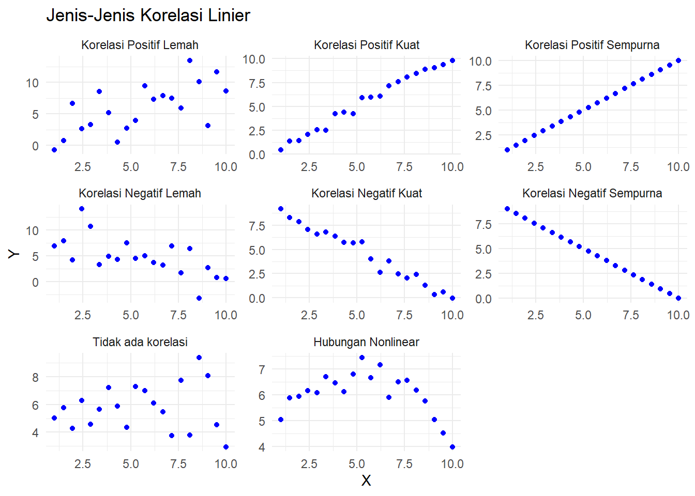
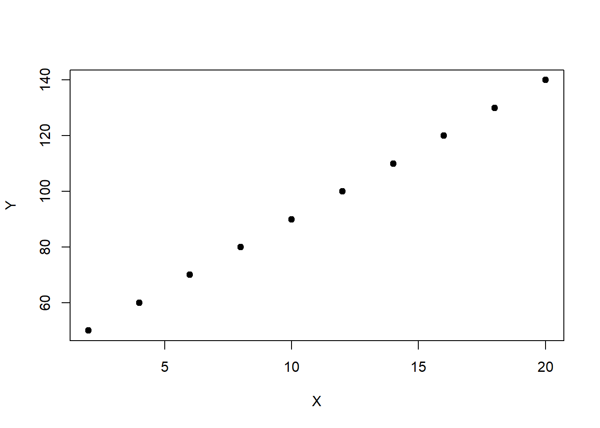
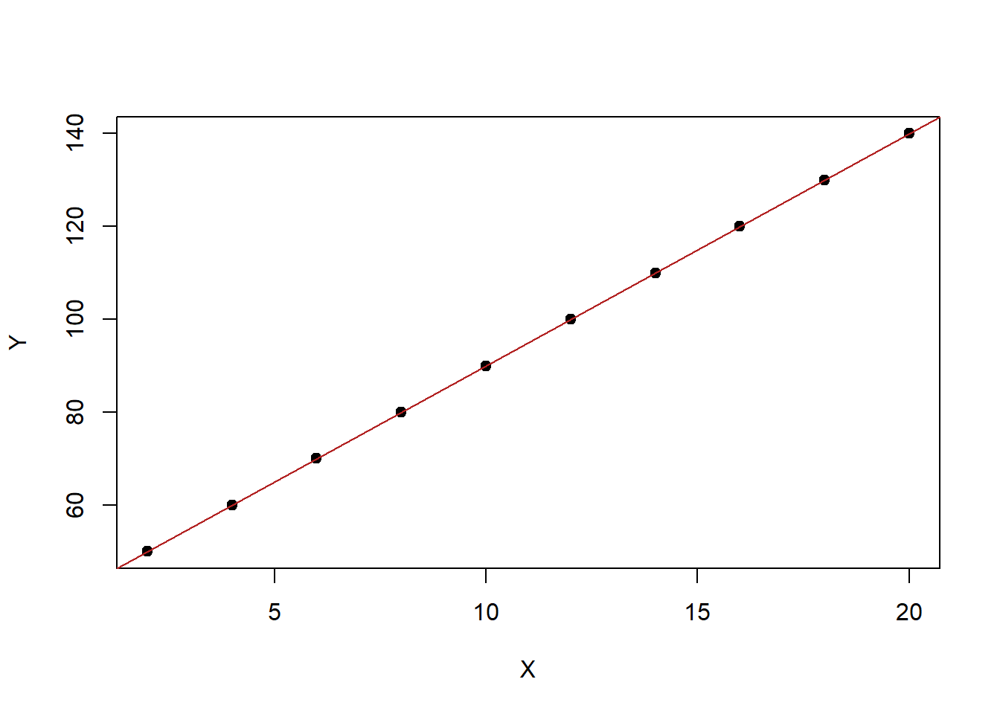

10 Analisis Korelasi Linier
Di dunia data analytics, sering sekali kita akan berhadapan dengan data yang berdimensi banyak. Apa maksudnya data berdimensi banyak? Data yang memiliki banyak variabel atau fitur untuk setiap entitas yang sedang dianalisis. Dimensi yang dimaksud adalah variabel atau kolom dalam dataset. Sering kali kita perlu untuk mengetahui hubungan antara dua variabel. Hubungan antara dua variabel numerik secara linier ini disebut dengan korelasi linier.
10.1 Apa Itu Korelasi Linier?
Korelasi linier adalah ukuran statistik yang digunakan untuk menggambarkan kekuatan dan arah hubungan antara dua variabel kuantitatif. Hubungan ini sering kali direpresentasikan dalam bentuk grafik scatter plot, di mana setiap titik menunjukkan pasangan data. Korelasi linier hanya relevan untuk hubungan yang bersifat linier, yaitu ketika kedua variabel cenderung berubah secara proporsional.
Sebagai contoh, jika variabel \(X\) adalah luas tanah suatu rumah dan variabel \(Y\) adalah harga jual rumah. Kita mungkin melihat bahwa semakin luas tanahnya, semakin tinggi harga jualnya. Jika variabel \(X\) naik dan variabel \(Y\) juga naik, hubungan ini disebut dengan korelasi positif. Sebaliknya, jika \(X\) naik tapi \(Y\) menurun, misalnya usia bangunan rumah dan harga jual rumah, hubungan ini disebut dengan korelasi negatif. Pengukuran kekuatan hubungan korelasi linier dua peubah numerik disebut koefisien korelasi.
Nilai koefisien korelasi dinotasikan sebagai \(r\). Nilai \(r\) berkisar antara -1 hingga 1, dengan interpretasi sebagai berikut:
- \(r = 1\): Hubungan positif sempurna. Ketika \(X\) naik, \(Y\) selalu naik dengan proporsi yang sama.
- \(r = -1\): Hubungan negatif sempurna. Ketika \(X\) naik, \(Y\) selalu turun dengan proporsi yang sama.
- \(r = 0\): Tidak ada hubungan linier antara \(X\) dan \(Y\).
Semakin mendekati \(+1\) artinya hubungan linier positif semakin kuat. Semakin mendekati \(-1\) menujukkan hubungan linier negatif semakin kuat, sedangkan semakin mendekati \(0\) semakin lemah hubungan liniernya.
10.2 Koefisien Korelasi Pearson
Pengukuran korelasi yang paling sering digunakan salah satunya adalah koefisien korelasi Pearson yang
Rumus koefisien korelasi Pearson adalah:
\[ r = \frac{\sum_{i=1}^{n} (X_i - \bar{X})(Y_i - \bar{Y})}{\sqrt{\sum_{i=1}^{n} (X_i - \bar{X})^2} \cdot \sqrt{\sum_{i=1}^{n} (Y_i - \bar{Y})^2}} \]
Di sini:
-
\(X_i\) dan \(Y_i\) adalah nilai individu dari masing-masing variabel.
-
\(\bar{X}\) dan \(\bar{Y}\) adalah rata-rata dari masing-masing variabel.
- \(n\) adalah jumlah pasangan data.
Rumus ini mengukur sejauh mana data menyimpang dari rata-rata secara bersamaan pada kedua variabel.
10.2.1 Contoh Sederhana
Misalnya, Anda memiliki data sebagai berikut:
| X | Y |
|---|---|
| 2 | 50 |
| 4 | 60 |
| 6 | 70 |
| 8 | 80 |
| 10 | 90 |
| 12 | 100 |
| 14 | 110 |
| 16 | 120 |
| 18 | 130 |
| 20 | 140 |

Jika kita menghitung \(r\) untuk data ini, kita akan mendapatkan \(r = 1\), yang menunjukkan hubungan positif sempurna. Artinya, semakin besar nilai \(X\), semakin tinggi nilai \(Y\). Hal ini juga kita bisa lihat dari pola hubungan antara \(X\) dan \(Y\) yang bisa kita tarik garis lurus dan semua titiknya akan ada di garis lurus tersebut.

10.2.2 Kapan Korelasi Tidak Cukup?
Penting untuk diingat bahwa korelasi tidak sama dengan kausalitas. Hanya karena dua variabel memiliki hubungan yang kuat, bukan berarti salah satu menyebabkan yang lain. Sebagai contoh, ada hubungan positif antara jumlah es krim yang terjual dan kasus tenggelam di kolam renang, tetapi keduanya sebenarnya disebabkan oleh variabel ketiga, yaitu musim panas.
10.3 Koefisien Korelasi Spearman
Koefisien korelasi Spearman adalah ukuran hubungan monotonic antara dua variabel. Berbeda dengan korelasi Pearson, yang mengukur hubungan linier, korelasi Spearman mengukur hubungan berdasarkan peringkat (rank) dari data, bukan nilai asli. Oleh karena itu, Spearman lebih cocok digunakan jika data tidak linier tetapi menunjukkan pola monotonic, atau jika data memiliki outlier yang ekstrem.
10.3.1 Rumus Koefisien Korelasi Spearman
Koefisien korelasi Spearman (\(r_s\)) dihitung sebagai: \[ r_s = 1 - \frac{6 \sum d_i^2}{n(n^2 - 1)} \]
Di mana:
- \(d_i\): Selisih antara peringkat (\(rank\)) dari dua variabel untuk observasi ke-\(i\).
- \(n\): Jumlah observasi.
10.3.2 Karakteristik Koefisien Korelasi Spearman
-
Nilai \(r_s\) berkisar antara \(-1\) hingga \(+1\):
-
\(r_s = +1\): Hubungan monotonic sempurna positif.
-
\(r_s = -1\): Hubungan monotonic sempurna negatif.
- \(r_s = 0\): Tidak ada hubungan monotonic.
-
\(r_s = +1\): Hubungan monotonic sempurna positif.
Cocok digunakan untuk data ordinal, data non-linier, atau data dengan outlier.
10.3.3 Perbedaan Koefisien Korelasi Spearman dan Pearson
| Aspek | Korelasi Pearson | Korelasi Spearman |
|---|---|---|
| Jenis Hubungan | Mengukur hubungan linier | Mengukur hubungan monotonic |
| Data yang Dibutuhkan | Nilai asli (kontinu) | Peringkat (rank), cocok untuk data ordinal |
| Sensitivitas Outlier | Sensitif terhadap outlier | Tidak sensitif terhadap outlier |
| Penggunaan | Data dengan hubungan linier dan tanpa outlier | Data non-linier, ordinal, atau memiliki outlier |
Contoh Perbedaan
-
Pearson: Jika \(X\) dan \(Y\) memiliki hubungan linier seperti \(Y = 2X + 3\), Pearson akan memberikan nilai tinggi (mendekati \(+1\) atau \(-1\)).
- Spearman: Jika \(X\) dan \(Y\) hanya saling meningkat (monotonic) tetapi tidak linier, Pearson mungkin memberikan nilai rendah, sementara Spearman tetap menunjukkan hubungan yang kuat.
10.4 Uji Hipotesis Korelasi
Ketika kita berbicara tentang analisis korelasi linier, salah satu langkah penting adalah memastikan bahwa hubungan antara dua variabel yang kita temukan bukanlah kebetulan. Untuk itu, kita perlu melakukan uji hipotesis. Uji ini membantu kita memutuskan apakah korelasi yang ditemukan dalam data cukup kuat untuk disimpulkan sebagai hubungan nyata, atau hanya muncul secara acak.
10.4.1 Langkah-Langkah Uji Hipotesis Korelasi Linier
-
Menentukan Hipotesis
Sebelum memulai uji, kita menetapkan dua pernyataan, yaitu:- Hipotesis nol (\(H_0\)): Tidak ada hubungan linier antara dua variabel (\(\rho = 0\)). Artinya, korelasi yang ada hanya karena kebetulan.
- Hipotesis alternatif (\(H_1\)): Ada hubungan linier antara dua variabel (\(\rho \neq 0\)).
\(\rho\) (dibaca rho) adalah koefisien korelasi dari populasi yang ingin kita uji.
Contoh: Kita ingin mengetahui apakah ada hubungan antara luas tanah (\(X\)) dan nilai jual rumah (\(Y\)).
-
\(H_0\): Tidak ada hubungan antara luas tanah dan nilai jual rumah.
- \(H_1\): Ada hubungan linier antara luas tanah dan nilai jual rumah.
Menentukan Tingkat Signifikansi (\(\alpha\))
Tingkat signifikansi adalah batas kesalahan yang kita toleransi. Biasanya, kita menggunakan \(\alpha = 0.05\), yang berarti kita bersedia menerima kemungkinan kesalahan sebesar 5% dalam menyimpulkan bahwa ada hubungan.-
Menghitung Statistik Uji
Untuk korelasi linier, statistik uji yang digunakan adalah uji-t dengan rumus:\[ t = \frac{r \sqrt{n-2}}{\sqrt{1-r^2}} \]
Di mana:
-
\(r\) adalah koefisien korelasi Pearson.
- \(n\) adalah jumlah pasangan data.
-
\(r\) adalah koefisien korelasi Pearson.
-
Menentukan Nilai Kritis atau p-value
- Jika kita menggunakan pendekatan p-value, kita membandingkan p-value hasil perhitungan dengan \(\alpha\).
- Jika menggunakan nilai kritis, kita membandingkan hasil statistik \(t\) dengan tabel sebaran t.
- Jika kita menggunakan pendekatan p-value, kita membandingkan p-value hasil perhitungan dengan \(\alpha\).
-
Kesimpulan Uji
- Jika \(\textit{p-value} \leq \alpha\), kita tolak \(H_0\). Ini berarti ada hubungan linier yang signifikan antara kedua variabel.
- Jika \(\textit{p-value} > \alpha\), kita gagal menolak \(H_0\). Ini berarti hubungan yang ditemukan tidak cukup kuat untuk disimpulkan sebagai hubungan nyata.
- Jika \(\textit{p-value} \leq \alpha\), kita tolak \(H_0\). Ini berarti ada hubungan linier yang signifikan antara kedua variabel.
10.4.2 Contoh Uji Hipotesis Korelasi
Kita memiliki data tentang jam belajar (\(X\)) dan nilai ujian (\(Y\)) dari 10 siswa, dan kita ingin menguji apakah ada hubungan linier antara keduanya. Setelah menghitung, kita mendapatkan \(r = 0.75\) dan \(n = 10\).
Langkah-langkahnya:
-
Hipotesis:
-
\(H_0\): \(\rho = 0\) (tidak ada hubungan linier).
- \(H_a\): \(\rho \neq 0\) (ada hubungan linier).
-
\(H_0\): \(\rho = 0\) (tidak ada hubungan linier).
-
Tingkat Signifikansi:
- \(\alpha = 0.05\).
Statistik Uji:
Dengan \(r = 0.75\) dan \(n = 10\), hitung: \[ \begin{align*} t &= \frac{0.75 \sqrt{10-2}}{\sqrt{1-0.75^2}} \\ &= \frac{0.75 \times 2.828}{\sqrt{0.4375}} \approx 3.87 \end{align*} \]Nilai Kritis atau p-value:
Dari tabel sebaran t dengan \(df = n-2 = 8\) dan \(\alpha = 0.05\), nilai kritis adalah \(t = 2.306\). Nilai p-value untuk nilai tersebut adalah 0.0047.Kesimpulan:
Karena \(t = 3.87 > 2.306\) atau \(\textit{p-value} = 0.0047 < 0.05\), kita tolak (H_0). Artinya, ada hubungan linier yang signifikan antara jam belajar dan nilai ujian.
10.4.3 Pentingnya Uji Hipotesis Korelasi
Uji hipotesis korelasi membantu memastikan bahwa hubungan yang kita temukan dalam data bukanlah kebetulan. Tanpa uji ini, kita berisiko membuat kesimpulan yang salah, yang dapat memengaruhi keputusan berbasis data. Dengan memahami dan melakukan uji hipotesis dengan benar, kita dapat mengambil kesimpulan yang lebih meyakinkan dan berbasis bukti.